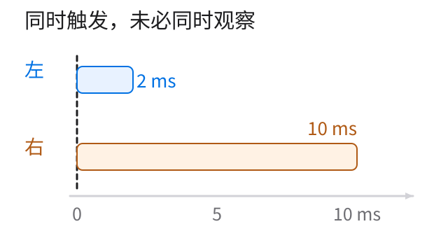
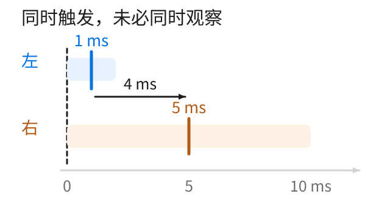
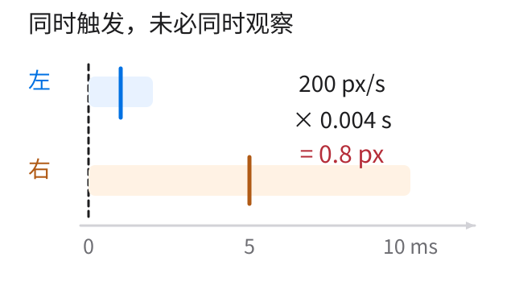

左右相机都标着 30 帧/秒，只说明各自平均多久产生一帧。拍静止的墙时，它们相差几毫秒也可能毫无异样。换成横向运动的物体，两个相机便可能记录它在不同位置的影像。
一张照片有好几个时刻
触发信号要求相机开始一次采集，实际曝光起点还可能落在设备允许的下一个时刻。曝光开始到结束这段时间内，传感器在积累光；然后才是读出、传输和主机回调。设备时间戳必须查清究竟标记哪个事件、采用什么时钟、计数单位是什么。主机记录的到达时间还包含链路、队列和操作系统调度的延迟。
对于全局快门、曝光期间近似匀速且亮度平稳的目标，可以用曝光中点近似代表这张照片的观测时刻。如果两台相机接到同一触发，但一个曝光 2 毫秒，另一个曝光 10 毫秒，即便同时开始，中点也差 4 毫秒。滚动快门还会让画面里不同的行在不同时间曝光，单一中点只能是更粗的近似。
曝光条的中点才是这次估算的时间
两台全局快门相机同时开始曝光，左侧持续 2 毫秒、右侧持续 10 毫秒。假设目标在曝光期间匀速，亮度也近似稳定，用每条曝光区间的中点代表观测时刻。

先画完整曝光区间
查看大图
蓝条从 0 延伸到 2 毫秒，橙条从 0 延伸到 10 毫秒。触发起点对齐了，但一张照片是在一段时间里积累光，而不是在起点瞬间完成。之后读出、传输和回调还会增加延迟，它们不能直接代替这两条曝光区间。

分别取中点
查看大图
左相机的中点在 1 毫秒，右相机在 5 毫秒，因此两个代表时刻相差 4 毫秒。中点近似适用于这里设定的全局快门和匀速目标；如果有加速、亮度突变或滚动快门，整幅图不能简单由这两个数完全描述。

运动把时差变成错位
查看大图
如果目标每秒横移 200 像素，4 毫秒内移动约 0.8 像素。右相机更晚看到的位置会混进原有几何视差里，符号取决于运动方向与左右定义。先拍静止目标，再让它反向运动，是区分空间误差与时差的一种直观对照。
帧率、触发起点、曝光中点和到达时间各自描述不同环节。配对两幅图前，要先明确设备时间戳记录的是哪个事件。
小练习：保持同时开始曝光，若左、右曝光都改为 2 毫秒，这个例子中的中点差是多少？
中点差为 0：两边都在开始后 1 毫秒。这里只消除了由曝光时长不同引起的差值，仍需核对实际起始延迟和时钟同步。
以 30 帧/秒的两台设备为例，两路相邻帧都可以精确相隔约 33.3 毫秒，但右相机的每次曝光仍可能恰好比左相机晚 12 毫秒。只看各自帧间隔，两者都十分稳定；要判断相位差，还得观察两路共享的光学事件、触发编号或经过同步的设备时间。

四毫秒会移动多少像素
假设画面里一个小亮点以每秒 200 像素的速度向右移动。两次观测中点相差 4 毫秒，它就走过约 0.8 像素。这一点运动位移会叠到左右相机因为空间基线而产生的视差上，具体是加还是减取决于运动方向与哪台相机较晚。若场景中某处的几何视差本来就只有 4 像素，0.8 已经占了五分之一。
左右图先后到达计算机并不自动说明曝光也有同样的时差。反过来，两个回调的主机时间非常接近，也不能证明传感器一起曝光。硬件共同触发可以约束开始采集的时刻，时钟同步帮助比较时间戳；两件事分别解决不同环节。自动曝光还可能在运行中改变左右曝光时长，需要记录每一帧真正生效的数值。
把它放回测距公式更直观。取 fB = 60 像素·米，静止目标视差 4 像素，深度是 15 米。若运动让测得的视差变为 3.2，得到 18.75 米；若变为 4.8，则是 12.5 米。两种偏差幅度不同，缘于深度对视差取倒数。调试时分别记下运动方向、哪台相机更晚以及视差符号，才知道误差会朝哪边变化。
用运动目标观察配对是否合适
先在固定曝光下拍一块有纹理的静止板，检查内参、极线校正和左右几何关系。然后让清楚可见的物体依次向左、向右移动，比较两种方向下的匹配偏差。若误差随速度增长并在反向时换符号，说明时间配对值得优先检查。若静止时同样错位，则要先回到成像几何和匹配质量。
采集日志可以同时保留左右帧序号、设备时间戳、曝光时长和到达时刻。先弄懂两个设备的时钟是否可比，再找一帧丢失后的配对结果。按“左右各取下一帧”的方式在丢帧后可能永久错开一帧；按明确触发编号或可比较的时间窗口匹配，更容易把缺失观测显式标出。
用往返运动隔离时间误差
先让同一贴纸静止在距相机固定的位置，量出它在左右图的视差 d₀。再让贴纸在保持深度不变的导轨上往返，尽量让它以相同大小的速度经过视野中央。若测到向右时 3.2 像素、向左时 4.8 像素，两者平均为 4.0，回到静止视差附近。一个随方向反转的分量通常值得沿相机曝光时刻继续排查。
这里用到镜头固定、左右相机内外参不变和贴纸深度不变。若导轨歪向镜头，贴纸来回经过的不是同一点，几何视差本来就会变。取同一刻度线附近的样本、用多组速度重复：若偏差近似随像素速度成比例，斜率可估一个有效时间差。观察曝光拖影过长的帧时，中点模型的适用性还应重新检查。